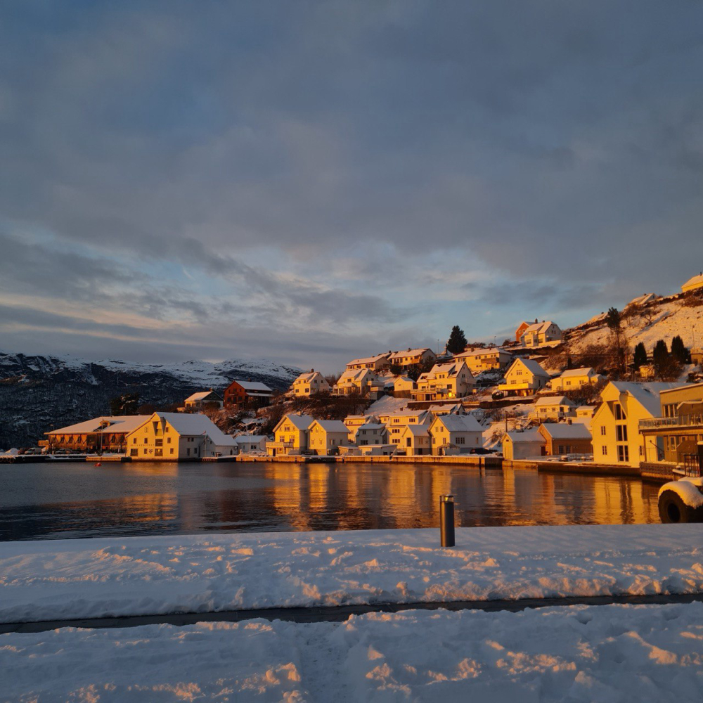

Article added: 24 Feb 2026
Last edited: 24 Feb 2026

Rogaland, Norway - Des 2023
**First step: **You need to send your documentation to Helsedirektoratet (Norway’s Ministry of Health) for evaluation.
A nurse (sykepleier) in Norway holds a bachelor’s degree. If after graduating from a college or vocational school, you receive a junior specialist degree. Therefore, you have two options: either upgrade your qualification to a bachelor’s degree or apply as a healthcare worker (helsefagarbeider).
You can enroll in the Kompletterende sykepleierutdanning (supplementary nursing education), which lasts one year and allows you to obtain authorization in Norway (link in description).
Requirements: Norwegian B2, English B1, bachelor’s diploma.
Advantages: no need to take the fagprøve or complete the national professional course.
Fee for document evaluation at Helsedirektoratet: 1,665 NOK
Processing time: 11 months
Documents to submit:
Additional documents (not required but may be requested)
Scan quality requirements:
After the education evaluation, you will receive confirmation that you can proceed to the second step. Nurses receive a temporary license. With this license, you can search for work and later transition to a work visa.
Second step: After receiving confirmation, you must complete the following within 3 years:
Корисні посилання:
Requirements for healthcare workers for countries not included in the EU or EEA